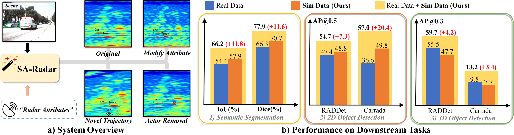
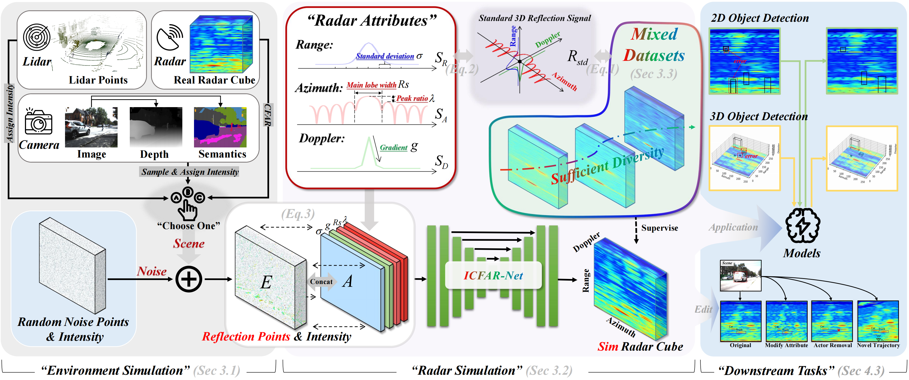
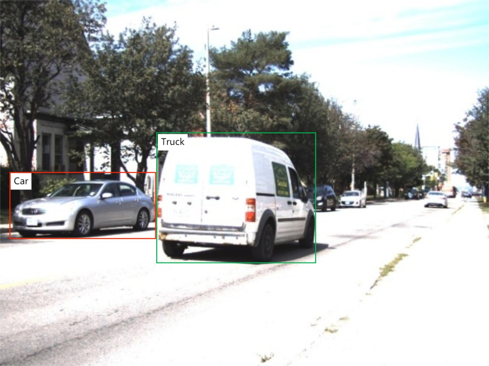
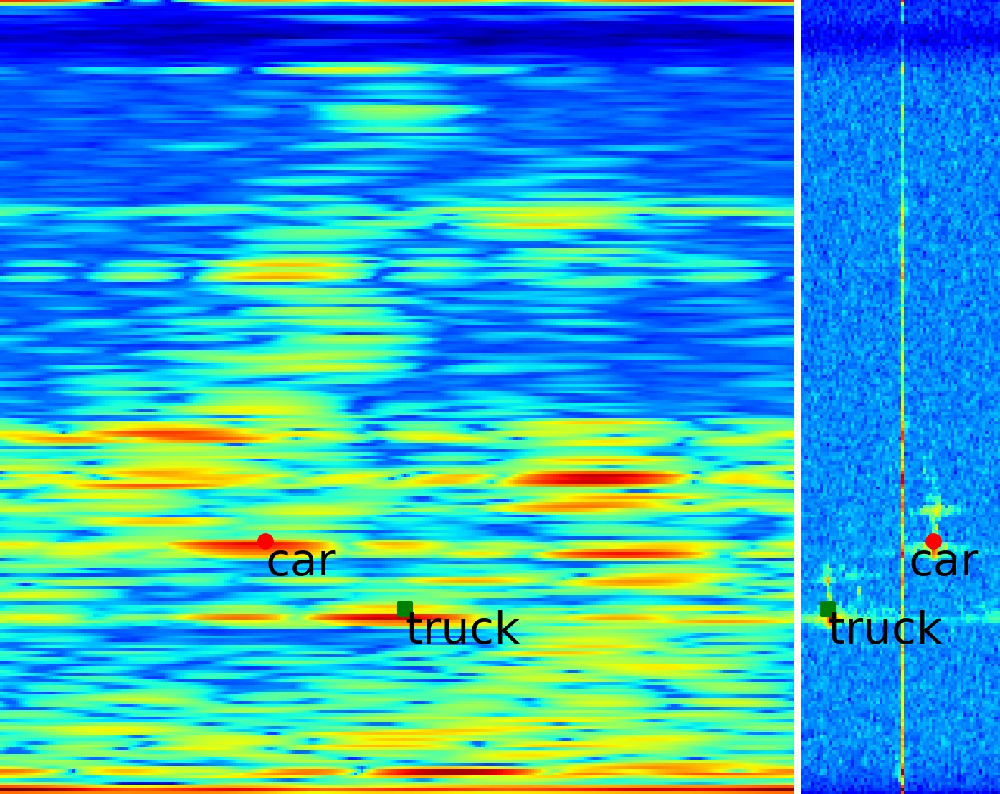
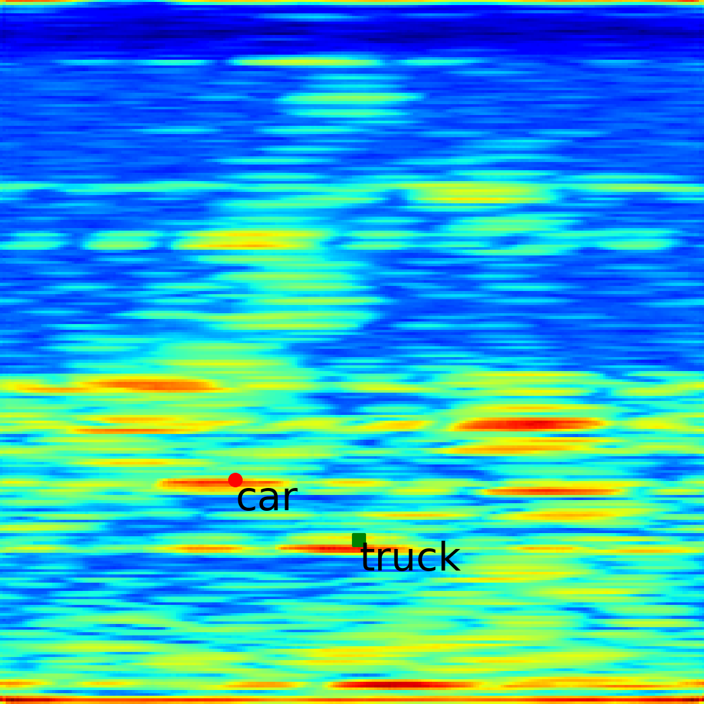
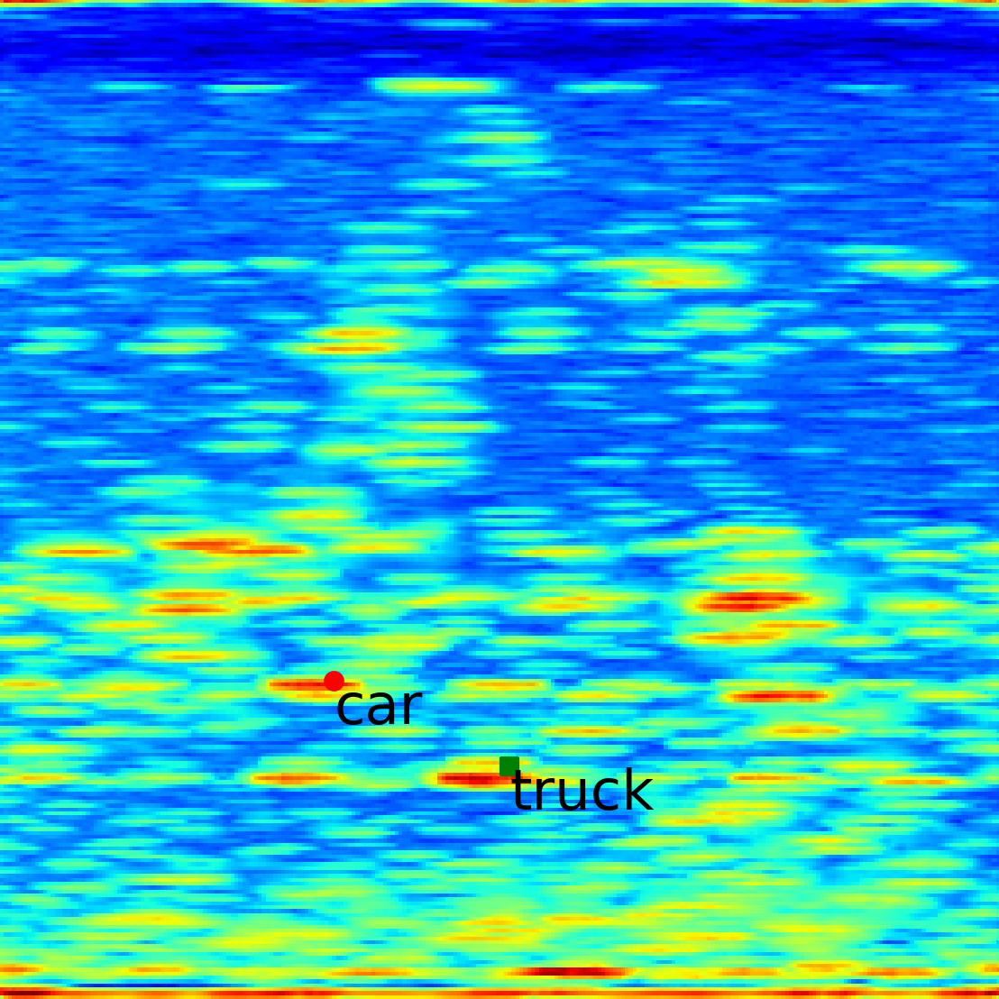
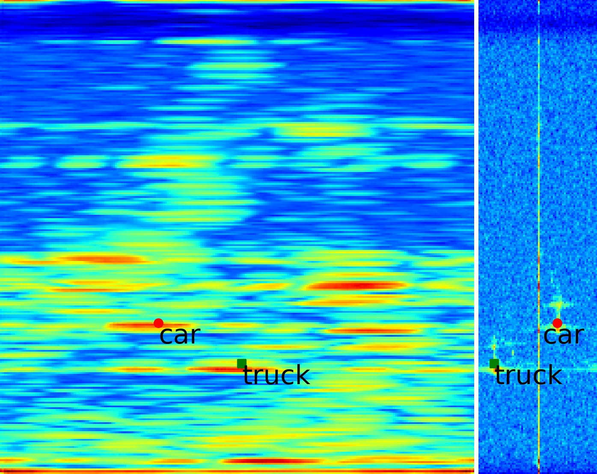
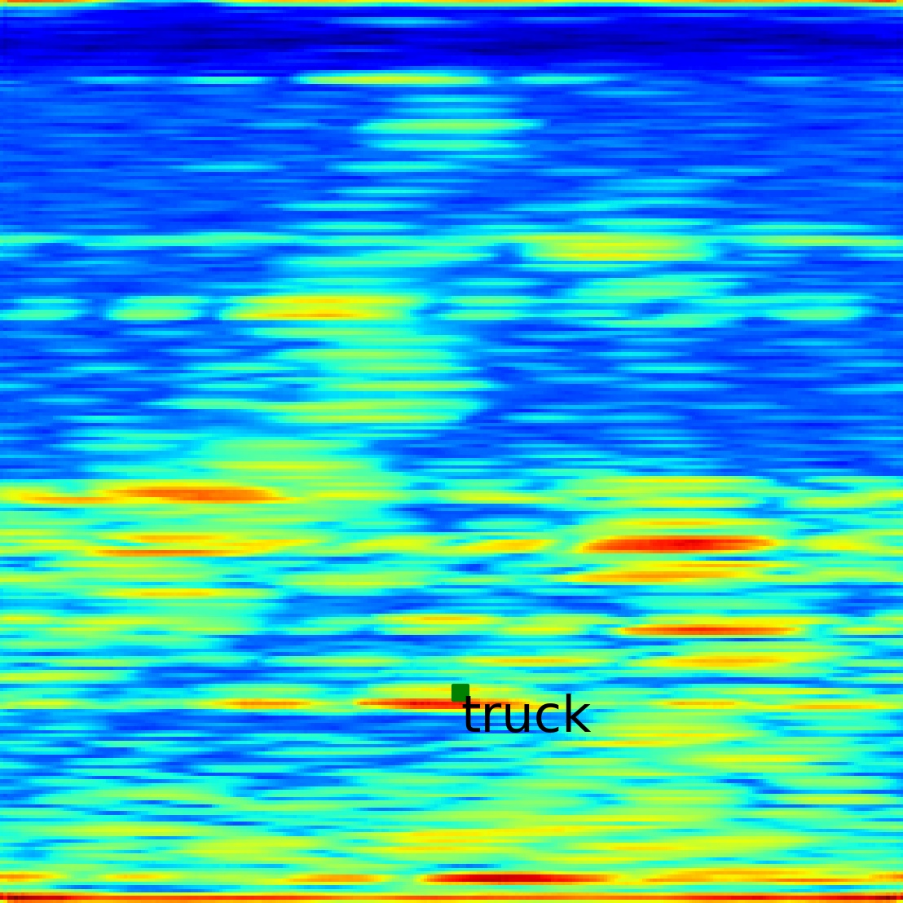
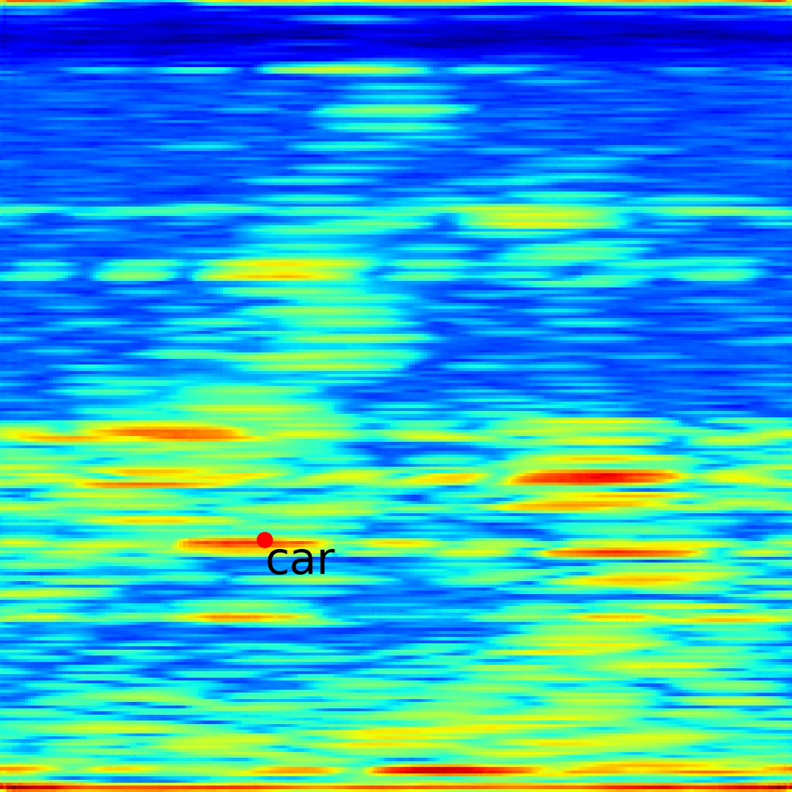

Abstract
We present SA-Radar (Simulate Any Radar), a radar simulation approach that enables controllable and efficient generation of radar cubes conditioned on customizable radar attributes. Unlike prior generative or physics-based simulators, SA-Radar integrates both paradigms through a waveform-parameterized attribute embedding. We design ICFAR-Net, a 3D U-Net conditioned on radar attributes encoded via waveform parameters, which captures signal variations induced by different radar configurations. This formulation bypasses the need for detailed radar hardware specifications and allows efficient simulation of range-azimuth-Doppler (RAD) tensors across diverse sensor settings. We further construct a mixed real-simulated dataset with attribute annotations to robustly train the network. Extensive evaluations on multiple downstream tasks—including 2D/3D object detection and radar semantic segmentation—demonstrate that SA-Radar's simulated data is both realistic and effective, consistently improving model performance when used standalone or in combination with real data. Our framework also supports simulation in novel sensor viewpoints and edited scenes, showcasing its potential as a general-purpose radar data engine for autonomous driving applications.
Code and additional materials are available at https://github.com/zhuxing0/SA-Radar.
What Can It Be Used For?

(a) SA-Radar enables controllable and realistic radar simulation by conditioning on customizable radar attributes. It supports flexible scene editing such as attribute modification, actor removal, and novel trajectories. (b) SA-Radar improves performance on various tasks including semantic segmentation, 2D/3D object detection. In all settings, SA-Radar's synthetic data either matches or surpasses real data, and provides consistent gains when combined with real-world datasets.
Framework

We first construct a uniform reflection environment tensor E that records reflection points from both physical objects and background clutter. Then, we simulate the radar cube in the current reflection environment by integrating the radar attributes embedding in a 3D U-Net (referred to as ICFAR-Net in this paper). The radar attributes in ICFAR-Net are characterized only by the waveform parameters of the standard 3D reflection signals in each dimension, thus overcoming the need for radar-specific details. Extensive experiments show that the simulation data from our approach significantly enhances the performance of existing models on a wide range of downstream tasks, demonstrating its potential as a generalized radar data engine for autonomous driving applications.
Demonstrations
Accurate Radar Simulation
Our SA-Radar can simulate radar cube (range-azimuth-Doppler tensor) for any scene. We visualize the range-azimuth projection and the range-Doppler projection of the radar cube separately (both taking the maximum value). As shown in the figure, the simulation results of SA-Radar are highly similar to the ground truth. More examples are shown in Video Gallery 1.

RGB image

Sim radar cube

Ground truth radar cube
Attribute Modification
We can directly modify the waveform parameters input to SA-Radar (specifically its ICFAR-Net) to simulate radar cubes with different radar attributes for the same scene. Use the slider here to linearly interpolate between radar A and radar B for novel radar simulation.

Radar A
Novel Radar

Radar B
Novel Trajectories
Our SA-Radar allows free editing of the viewpoints to obtain simulated images in novel viewpoints. The following figures show the results of shifting the viewpoint left and right by 5 meters, respectively.

Original viewpoint
5 meters to the left
5 meters to the right
Actor Removal
Our SA-Radar realizes the removal function by directly modifying the reflection intensity of the reflection points on the actors. The following figures show the simulated radar images after removing the car and truck respectively.
RGB image
Original simulation

Simulation with car removed

Simulation with truck removed
Video Gallery 1
Examples from the RADDet Dataset
We show multiple examples of radar simulation and scene editing in the following videos. Due to file size limitations, the videos are compressed and their quality may be affected. Each video displays an RGB image corresponding to five types of radar cube slices: real, simulated, modified attribute, actor-removed and novel trajectory.
Sequence 1
Sequence 2
Sequence 3
Sequence 4
Sequence 5
Sequence 6
Sequence 7
Sequence 8
Sequence 9
Sequence 10
Video Gallery 2
Comparison on Real and Simulated Sequences from the RADDet Dataset
The videos below present detection results of our method (SA-Radar) compared with the baseline model on multiple sequences from the RADDet dataset. Each video includes the RGB image sequence, detection results of our model, detection results of baseline model and ground-truth (GT) annotations. Real Sequences refer to recordings captured from real-world driving scenarios, while Simulated Sequences are generated by our method. Both RA (Range-Azimuth) and RAD (Range-Azimuth-Doppler) data are recommended for complete comparison.
Note: Due to file size limitations, all videos are compressed, which may affect visual quality.
Sequence 1
Sequence 2
Sequence 3
Sequence 4
Sequence 5
Sequence 6
Sequence 7
Sequence 8
Sequence 9
BibTeX
@article{xiao2025simulate,
title={Simulate Any Radar: Attribute-Controllable Radar Simulation via Waveform Parameter Embedding},
author={Xiao, Weiqing and Huang, Hao and Zhong, Chonghao and Lin, Yujie and Wang, Nan and Chen, Xiaoxue and Chen, Zhaoxi and Zhang, Saining and Yang, Shuocheng and Merriaux, Pierre and others},
journal={arXiv preprint arXiv:2506.03134},
year={2025}
}